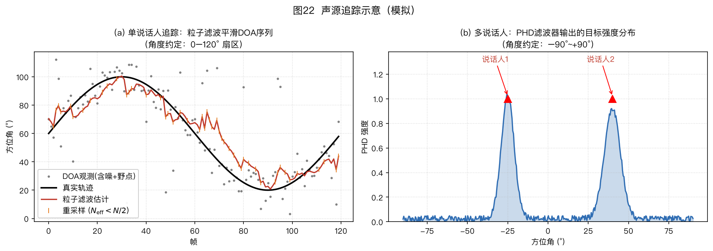
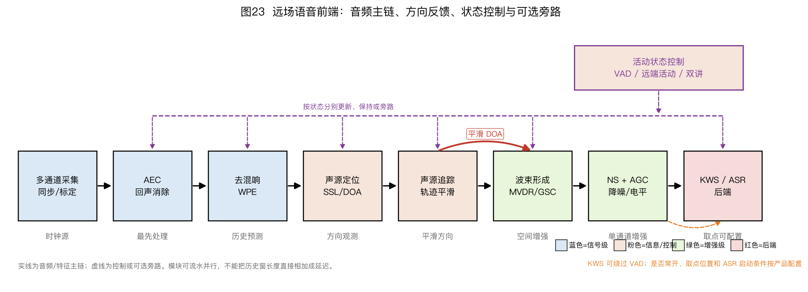

⚠️ 本篇是系列教程第 9 章（共 13 章），可独立阅读，前后篇见下方导航。
🏠 首页导读：🏠 导读与导航 ｜ 上一篇：第 8 章 · 语音分离 ｜ 下一篇：第 10 章 · 工程实现与产业实践
9. 声源追踪
9.1 问题与声学特殊性
声源追踪持续估计运动声源状态 $\vec{s}_t=[\theta_t,\dot\theta_t,\ddot\theta_t]^\top$，其中三项分别为角度、角速度和角加速度。它把含噪且可能间断的逐帧定位结果融合成连续轨迹，再为波束形成提供较平滑的指向。LOCATA 声源定位与追踪挑战数据集包含运动说话人录音和光学动捕真值，可用于比较本章方法，入口见 §10.6。
声学追踪有四个特点：说话人停顿会造成间歇观测，需要语音活动检测（Voice Activity Detection，VAD）门控和轨迹维持；混响会产生非高斯误差和野点；声源数会随时间变化；到达方向（Direction of Arrival，DOA）与笛卡尔位置之间是非线性关系。若状态为平面位置与速度 $[x,y,\dot x,\dot y]$，阵列中心为 $(x_0,y_0)$，则观测函数为 $\theta=\operatorname{atan2}(y-y_0,x-x_0)$。扩展卡尔曼滤波（Extended Kalman Filter，EKF）用该函数的雅可比做一阶线性化，无迹卡尔曼滤波（Unscented Kalman Filter，UKF）则传播 $2L+1$ 个 sigma 点；此处 $L=4$，需要 9 个点。近距离或跨越阵列正上方时非线性更强，应比较 UKF、粒子滤波或其他非线性方法，而不是直接套用线性卡尔曼滤波（Kalman Filter，KF）。
9.2 单目标追踪
状态模型写为 $\vec{s}_t=\mathbf F\vec{s}_{t-1}+\vec v_t$，其中 $\mathbf F$ 描述匀速或匀加速运动，$\vec v_t$ 是未建模运动造成的过程噪声。若定位器只输出角度，观测模型为 $\theta_t^{obs}=\mathbf H\vec{s}_t+w_t$，$w_t$ 是观测噪声。三维状态时 $\mathbf H=[1,0,0]$；下文二维简化状态 $[\theta,\dot\theta]^\top$ 使用 $\mathbf H=[1,0]$。
贝叶斯递推包含预测和更新。预测阶段依据运动模型外推状态，并增加因过程噪声带来的不确定度；更新阶段用观测与预测之差，即新息，修正状态和协方差。在线性高斯假设下，卡尔曼滤波给出这两个阶段的闭式递推。
卡尔曼滤波（KF）的五步递推（状态取 [角度, 角速度]）： 1. 预测：$\hat{\vec{s}}^-_t = \mathbf{F}\hat{\vec{s}}_{t-1}$——“他上一帧以这个速度在走，这帧大概到这儿”； 2. 预测的不确定度：$\mathbf{P}^-_t = \mathbf{F}\mathbf{P}_{t-1}\mathbf{F}^\top + \mathbf{Q}$——不确定度只会随时间增大，$\mathbf{Q}$ 是过程噪声协方差（“目标多爱乱动”）； 3. 计算卡尔曼增益：$\mathbf{K}_t = \mathbf{P}^-_t\mathbf{H}^\top(\mathbf{H}\mathbf{P}^-_t\mathbf{H}^\top + \mathbf{R})^{-1}$，其中 $\mathbf R$ 是观测噪声协方差。观测噪声较小时增益增大，更新更依赖观测；预测协方差较小时增益减小，更新更依赖运动模型； 4. 更新：$\hat{\vec{s}}_t = \hat{\vec{s}}^-_t + \mathbf{K}_t\big(\theta^{obs}_t - \mathbf{H}\hat{\vec{s}}^-_t\big)$——括号里的差叫新息（innovation，观测与预测之差），用增益加权的新息修正预测； 5. 更新的不确定度：$\mathbf{P}_t = (\mathbf{I}-\mathbf{K}_t\mathbf{H})\mathbf{P}^-_t$——每吸收一次观测，不确定度就降一截。
算例 9-1：卡尔曼滤波单步数值例（跟住一个正在转头的说话人）
下面用一组数值执行完整递推。状态向量取 §9.1 三维状态的二维简化版 $\vec{s}=[\theta,\dot\theta]^{\top}$，单位分别为度和度/帧。该模型省略加速度，适合运动较平缓的示例；频繁机动时可改用含加速度的模型或后文的 IMM。已知：
- 上一帧估计：$\hat{\vec{s}}_{t-1}=[30,\ 0.5]^{\top}$（目标在 30°，每帧向右走 0.5°）；
- 上一帧不确定度：$\mathbf{P}_{t-1}=\begin{bmatrix}4&0\\0&0.25\end{bmatrix}$（角度方差 4°²，即标准差 2°；角速度方差 0.25）；
- 状态转移矩阵（匀速模型）：$\mathbf{F}=\begin{bmatrix}1&1\\0&1\end{bmatrix}$（“新角度 = 旧角度 + 1 帧 × 角速度，角速度不变”的矩阵写法）；
- 过程噪声：$\mathbf{Q}=\begin{bmatrix}0.1&0\\0&0.01\end{bmatrix}$（“目标其实会乱动”的程度，$\mathbf{Q}$ 越大滤波器越不敢信自己的预测）；
- 观测矩阵：$\mathbf{H}=[1,\ 0]$（DOA 算法只报角度，不报角速度）；
- 本帧观测：$\theta^{obs}_t=32°$；观测噪声 $\mathbf{R}=25$（标准差 5°，反映单帧 DOA 估计相当粗糙）。
第 1 步：预测 $\hat{\vec{s}}^-_t=\mathbf{F}\hat{\vec{s}}_{t-1}$
$$\hat{\vec{s}}^-_t=\begin{bmatrix}1&1\\0&1\end{bmatrix}\begin{bmatrix}30\\0.5\end{bmatrix}=\begin{bmatrix}1\times30+1\times0.5\\0\times30+1\times0.5\end{bmatrix}=\begin{bmatrix}30.5\\0.5\end{bmatrix}$$
“他上一帧在 30°、每帧走 0.5°，这帧大概到 30.5°。”
第 2 步：预测的不确定度 $\mathbf{P}^-_t=\mathbf{F}\mathbf{P}_{t-1}\mathbf{F}^{\top}+\mathbf{Q}$
先算 $\mathbf{F}\mathbf{P}_{t-1}=\begin{bmatrix}1&1\\0&1\end{bmatrix}\begin{bmatrix}4&0\\0&0.25\end{bmatrix}=\begin{bmatrix}4&0.25\\0&0.25\end{bmatrix}$（第一行：$1\times4+1\times0=4$，$1\times0+1\times0.25=0.25$；第二行照算）。
再乘 $\mathbf{F}^{\top}=\begin{bmatrix}1&0\\1&1\end{bmatrix}$：
$$\mathbf{F}\mathbf{P}_{t-1}\mathbf{F}^{\top}=\begin{bmatrix}4&0.25\\0&0.25\end{bmatrix}\begin{bmatrix}1&0\\1&1\end{bmatrix}=\begin{bmatrix}4\times1+0.25\times1 & 4\times0+0.25\times1\\ 0\times1+0.25\times1 & 0\times0+0.25\times1\end{bmatrix}=\begin{bmatrix}4.25&0.25\\0.25&0.25\end{bmatrix}$$
左上角从 4 增加到 4.25，因为角速度的不确定度会在预测后传播到角度。再加上 $\mathbf Q$：
$$\mathbf{P}^-_t=\begin{bmatrix}4.25&0.25\\0.25&0.25\end{bmatrix}+\begin{bmatrix}0.1&0\\0&0.01\end{bmatrix}=\begin{bmatrix}4.35&0.25\\0.25&0.26\end{bmatrix}$$
即预测的角度不确定度为标准差 $\sqrt{4.35}\approx2.09°$。
第 3 步：卡尔曼增益 $\mathbf{K}_t=\mathbf{P}^-_t\mathbf{H}^{\top}(\mathbf{H}\mathbf{P}^-_t\mathbf{H}^{\top}+\mathbf{R})^{-1}$
$\mathbf{H}\mathbf{P}^-_t\mathbf{H}^{\top}$ 只是取出 $\mathbf{P}^-_t$ 的左上角元素 $4.35$（因为 $\mathbf{H}=[1,0]$ 起到“挑出角度分量”的作用），于是分母是标量：
$$\mathbf{H}\mathbf{P}^-_t\mathbf{H}^{\top}+\mathbf{R}=4.35+25=29.35$$
分子 $\mathbf{P}^-_t\mathbf{H}^{\top}=\begin{bmatrix}4.35&0.25\\0.25&0.26\end{bmatrix}\begin{bmatrix}1\\0\end{bmatrix}=\begin{bmatrix}4.35\\0.25\end{bmatrix}$（取 $\mathbf{P}^-_t$ 的第一列）。
$$\mathbf{K}_t=\frac{1}{29.35}\begin{bmatrix}4.35\\0.25\end{bmatrix}=\begin{bmatrix}0.148\\0.0085\end{bmatrix}\quad\text{（已修约：}0.1482\to0.148\text{，}0.00852\to0.0085\text{）}$$
增益是 $2\times1$ 向量：$K_1=0.148$（角度分量信观测的比例）、$K_2=0.0085$（角速度分量分到的一点残差信息——观测虽只报角度，但角度残差里也藏着“速度估偏了”的线索）。
$K_1\approx0.148$ 表示角度更新量取新息的约 14.8%。观测噪声方差 25 大于预测角度方差 4.35，因此估计更接近预测值。若 $\mathbf R$ 减小，$K_1$ 会增大，观测对更新的影响也会增加。
第 4 步：更新 $\hat{\vec{s}}_t=\hat{\vec{s}}^-_t+\mathbf{K}_t(\theta^{obs}_t-\mathbf{H}\hat{\vec{s}}^-_t)$
新息（innovation，观测与预测之差）为 $\theta^{obs}_t-\mathbf{H}\hat{\vec{s}}^-_t=32-30.5=1.5°$。
$$\hat{\vec{s}}_t=\begin{bmatrix}30.5\\0.5\end{bmatrix}+\begin{bmatrix}0.148\\0.0085\end{bmatrix}\times1.5=\begin{bmatrix}30.5+0.222\\0.5+0.0128\end{bmatrix}=\begin{bmatrix}30.72\\0.513\end{bmatrix}$$
角度由预测值向观测值修正约 0.22°，角速度更新为 0.513°/帧。最终角度 30.72° 位于预测值 30.5° 与观测值 32° 之间，并因 $K_1$ 较小而更接近预测值。
第 5 步：更新的不确定度 $\mathbf{P}_t=(\mathbf{I}-\mathbf{K}_t\mathbf{H})\mathbf{P}^-_t$
先算 $\mathbf{K}_t\mathbf{H}=\begin{bmatrix}0.148\\0.0085\end{bmatrix}[1,\ 0]=\begin{bmatrix}0.148&0\\0.0085&0\end{bmatrix}$，于是
$$\mathbf{I}-\mathbf{K}_t\mathbf{H}=\begin{bmatrix}1-0.148&0\\-0.0085&1\end{bmatrix}=\begin{bmatrix}0.852&0\\-0.0085&1\end{bmatrix}$$
$$\mathbf{P}_t=\begin{bmatrix}0.852&0\\-0.0085&1\end{bmatrix}\begin{bmatrix}4.35&0.25\\0.25&0.26\end{bmatrix}=\begin{bmatrix}3.705&0.213\\0.213&0.258\end{bmatrix}$$
（第一行：$0.852\times4.35=3.705$，$0.852\times0.25=0.213$；第二行：$-0.0085\times4.35+1\times0.25=0.213$，$-0.0085\times0.25+1\times0.26=0.258$。）
角度方差从 4.35 降到 3.71（标准差约 1.93°）——每吸收一次观测，不确定度就降一截。若下一帧说话人停顿没有观测，就只做第 1、2 步：$\mathbf{P}$ 重新涨大，波束指向维持外推，这就是“静默保持”（§9.4）。
算例 9-1说明了单步卡尔曼递推。下表比较常见单目标追踪方法的假设、计算量和适用条件。
表中 α-β 滤波器说的“免 Riccati 迭代”，指的就是把第 2、3、5 步的不确定度递推（Riccati 方程）换成固定增益。
| 方法 | 原理 | 优点 | 缺点 | 适用 |
|---|---|---|---|---|
| 滑动平均/中值/直方图众数 | 对 DOA 序列低通 | 极简、零假设 | 延迟大、跟不上机动、多源混杂 | 早期音箱近似 |
| α-β / α-β-γ | 稳态增益卡尔曼 | 免 Riccati 迭代 | 增益非最优 | 嵌入式 |
| 卡尔曼滤波 KF | 高斯线性最优贝叶斯递推（预测+新息加权更新） | 最优（线性高斯）、$O(d^3)$ 且 $d$ 只有 2~3，计算量可忽略 | 抗野点差、需调 Q/R | 观测质量好时首选 |
| EKF（扩展卡尔曼滤波）/UKF（无迹卡尔曼滤波） | 一阶线性化/无迹变换处理非线性 | 位置↔角度非线性可处理 | EKF 易发散、UKF 需传播约 2L+1 个 sigma 点 | 分布式阵列位置级追踪 |
| IMM 交互多模型 | 静止/匀速/加速等多个运动模型并行跑 KF，按各自似然动态加权融合 | 机动与静止通吃、无需预知运动模式 | 计算为单 KF 的数倍、需调模型间转移概率 | 说话人“停—走—停”的机动场景 |
| 粒子滤波（PF）/SIR | 带权粒子近似后验；预测、加权、按需重采样 | 能表示非线性、非高斯和多峰后验 | 鲁棒性取决于似然与杂波模型；会权重退化和样本贫化 | 观测多峰或运动模型明显非线性 |
IMM 的转移概率和各模型过程噪声需要用目标运动数据标定。对角占优的转移矩阵表示运动模式通常会持续多帧，但具体数值不能脱离帧率和语料直接照搬。
IMM 的模型切换：IMM 并行运行静止、匀速或加速等运动模型，再根据各模型的新息似然更新权重。它适合包含启动、停止和匀速段的轨迹。两模型例子可使用静止与匀速模型；转移矩阵的对角元素表示保持当前运动模式的概率。0.95 或 0.9 只能作为示例，实际数值必须结合帧率和目标运动数据估计。
EKF 与 UKF：EKF 对 $\theta=\operatorname{atan2}(y-y_0,x-x_0)$ 求雅可比，并在当前估计附近做一阶线性化；估计偏离真实状态较大时，线性化误差可能导致发散。UKF 不显式求导，而是将 $2L+1$ 个 sigma 点通过原始非线性观测函数，再重构均值与协方差，计算量通常高于 EKF。
算例 9-2：10 个粒子的一轮加权与重采样
卡尔曼滤波用均值和协方差表示单峰高斯后验。粒子滤波（particle filter，PF）用 $N$ 个带权样本近似后验，可以表达偏斜或多峰分布。它并不会自动抵抗观测野点：若似然模型把野点当成高置信观测，粒子权重仍会被错误观测拉偏。鲁棒性来自观测门控、重尾似然或“目标加均匀杂波”的混合似然。下面用 10 个粒子演示加权与重采样。
设本帧 10 个粒子的角度猜测（单位：度）为：
$$x_1,\dots,x_{10}=[25,\ 27,\ 28,\ 30,\ 30,\ 31,\ 32,\ 33,\ 35,\ 40]$$
本帧观测 $\theta^{obs}=31°$，观测噪声标准差 $\sigma=5°$（方差 $\sigma^2=25$）。
第 1 步：根据观测似然计算权重
每个粒子的权重用高斯似然：离观测越近分越高，
$$w_i=\exp\!\left(-\frac{(x_i-\theta^{obs})^2}{2\sigma^2}\right)=\exp\!\left(-\frac{(x_i-31)^2}{50}\right)$$
逐个计算（$(x_i-31)^2$ 先列出来）：
| 粒子 $x_i$ | $(x_i-31)^2$ | $w_i=\exp(-(x_i-31)^2/50)$ |
|---|---|---|
| 25 | 36 | $\exp(-0.72)=0.4868$ |
| 27 | 16 | $\exp(-0.32)=0.7261$ |
| 28 | 9 | $\exp(-0.18)=0.8353$ |
| 30 | 1 | $\exp(-0.02)=0.9802$ |
| 30 | 1 | $\exp(-0.02)=0.9802$ |
| 31 | 0 | $\exp(0)=1.0000$ |
| 32 | 1 | $\exp(-0.02)=0.9802$ |
| 33 | 4 | $\exp(-0.08)=0.9231$ |
| 35 | 16 | $\exp(-0.32)=0.7261$ |
| 40 | 81 | $\exp(-1.62)=0.1979$ |
权重和 $=0.4868+0.7261+0.8353+0.9802+0.9802+1.0000+0.9802+0.9231+0.7261+0.1979=7.8359$。
第 2 步：归一化权重
$$\tilde w_i=\frac{w_i}{7.8359}\;\Rightarrow\;[0.0621,\ 0.0927,\ 0.1066,\ 0.1251,\ 0.1251,\ 0.1276,\ 0.1251,\ 0.1178,\ 0.0927,\ 0.0253]$$
校验：归一化权重之和为 1。40° 是一个远离当前观测的粒子，不是观测野点；它的权重较小，只说明当前高斯似然会压低不符合观测的候选状态，不能证明粒子滤波对错误观测鲁棒。
第 3 步：计算有效粒子数 $N_{eff}$
$$N_{eff}=\frac{1}{\sum_{i=1}^{10}\tilde w_i^2}=\frac{1}{0.0621^2+0.0927^2+0.1066^2+0.1251^2+\cdots+0.0253^2}=\frac{1}{0.1101}\approx9.08$$
若 10 个粒子权重相等，$N_{eff}=10$；若全部权重集中在一个粒子上，$N_{eff}=1$，称为粒子退化。本例得到 9.08。常见实现会在 $N_{eff}$ 低于给定阈值时触发重采样，例如 $N/2$；阈值需要结合粒子数和任务验证。
第 4 步：在重采样前计算本帧估计
$$\hat\theta=\sum_{i=1}^{10}\tilde w_i\,x_i=0.0621\times25+0.0927\times27+0.1066\times28+0.1251\times30+\cdots+0.0253\times40\approx30.65°$$
不加权的平均为 31.1°，加权估计约为 30.65°。这个后验均值必须用重采样前的粒子和归一化权重计算。重采样后权重重置为 $1/N$，不能把旧权重再乘到新粒子上；重采样后取均值只是在有限样本下近似同一后验。
第 5 步：系统重采样。连续加权会使多数粒子的权重趋近于零。系统重采样按归一化权重重新抽取 10 个粒子，允许高权重粒子重复出现，并把新权重统一重置为 $1/10$。先计算累积和 $[0.0621,\ 0.1548,\ 0.2614,\ 0.3865,\ 0.5116,\ 0.6392,\ 0.7643,\ 0.8821,\ 0.9747,\ 1.0000]$，再从 $[0,0.1)$ 取起点 $u_0=0.0637$，以 0.1 为间隔得到 10 个采样点。对应的新粒子群为：
$$[27,\ 28,\ 30,\ 30,\ 30,\ 31,\ 32,\ 32,\ 33,\ 35]$$
30° 和 32° 的粒子被重复抽取，25° 和 40° 的粒子未被抽中。重采样是随机过程，不按单个粒子的权重机械排序；31° 虽有最高单粒子权重，本次仍只保留一份。下一帧先按运动模型传播粒子，再根据新观测重新计算权重。
粒子滤波依次执行状态传播、似然加权、归一化和按需重采样。它能表示多峰后验，但观测野点仍需门控或杂波似然处理。
抗野点技巧包括观测门控、混合似然和辅助粒子滤波（Auxiliary Particle Filter，APF）。门控阈值不能只照搬固定的 $3\sigma$，应结合观测误差分布和漏检代价标定。图22(a) 为序贯重要性重采样粒子滤波（Sequential Importance Resampling Particle Filter，SIR-PF）平滑 DOA 观测的模拟（仿真条件：单目标匀速转弯、每帧 DOA 观测加零均值高斯噪声、混入约 20% 均匀野点，粒子数 200）：灰点是含噪观测，黑线是真实轨迹，红线平滑跟住目标。

图22（a）中，灰点为逐帧 DOA 观测，黑线为真实轨迹，红线为粒子滤波估计。仿真使用匀速转弯、高斯观测噪声、约 20% 均匀野点和 200 个粒子；观测缺失时，轨迹由运动模型短时外推。（b）在 −25° 和 +40° 附近设置两个强度峰，用于说明多目标强度函数。峰数只能近似用于提取人数，严格定义见 §9.3。
单目标追踪由预测和观测更新组成。线性高斯条件下可使用卡尔曼滤波；非线性、多峰或重尾观测可考虑 UKF 或粒子滤波。粒子滤波仍需门控或杂波似然处理野点，IMM 用于多运动模型切换，VAD 用于控制无观测时的更新。
9.3 多目标追踪
多目标追踪需要同时解决观测与轨迹的数据关联，并估计当前的声源数量。
| 方法族 | 代表 | 思想 | 声学表现 |
|---|---|---|---|
| 数据关联+单目标滤波 | JPDA（联合概率数据关联）、MHT（多假设跟踪） | 算观测属于各轨迹的概率/假设树 | 有效但组合爆炸，声学实现重 |
| 多目标粒子滤波 | Brutti et al. 2010 经典 | 每目标一簇粒子 + 最近邻分配 | 2~3 源内有效，源数需先验 |
| 随机有限集（RFS）/ PHD 滤波 | PHD、CPHD、SMC-PHD | 传播目标集合的一阶强度；积分给期望目标数，峰用于提取状态 | 避免显式枚举关联，但不保留身份；峰提取和参数设置影响结果 Liu et al. 2018 |
| LMB（标记多伯努利） / δ-GLMB | labeled RFS | 给目标贴标签、输出带身份轨迹 | 语音领域新兴（2020+），计算重 |
| track-before-detect | 对定位谱直接滤波 | 不硬切观测，保留弱目标信息 | 与 DNN 定位谱天然契合 |
| 序列神经网络 | RNN/Transformer 处理定位后验序列 | 可学习时间平滑与活动模式 | 仍需训练数据；是否输出稳定身份取决于标签和损失 |
LMB/δ-GLMB 为目标维护标签，可输出带身份的轨迹；检测前追踪直接递推定位谱，保留未越过检测阈值的弱证据。活动耦合笛卡尔 DOA（activity-coupled Cartesian DOA，ACCDOA）把向量方向编码为 DOA、向量长度编码为活动强度。它本身是逐帧声事件定位与检测的输出表示，不等同于追踪器；只有结合时序模型、平滑和身份关联后，才形成轨迹。
PHD 强度 $D_t(x)$ 也不是“某处有人”的普通概率密度。它在区域 $A$ 上的积分表示该区域内目标数的期望，因而总目标数估计来自 $\hat N_t=\int D_t(x)\,dx$，再按整数规则取值。目标位置通常从强度峰或聚类中心提取；“峰数就是人数”只是实现近似。PHD 避免显式枚举观测—目标关联，但只传播一阶矩，不保留目标身份，也不能完整描述目标间相关性。
PHD 的预测式为
$$D_{t|t-1}(x)=\int p_S(x')f_t(x\mid x')D_{t-1}(x')\,dx'+\gamma_t(x),$$
其中 $p_S$ 是存活概率，$f_t$ 是状态转移密度，$\gamma_t$ 是新生目标强度。更新式把漏检项与每条观测的贡献相加；分母中的杂波强度会抑制孤立假峰。粒子或高斯混合只是表示和计算这张强度函数的不同方法。目标数由强度积分估计，位置再从峰或聚类中心提取。Liu et al. 2019
多目标追踪还要估计观测与轨迹的对应关系以及目标数。JPDA 和 MHT 显式处理关联；PHD 传播随机有限集的一阶强度；LMB 保留目标标签；检测前追踪保留未越过检测阈值的弱证据。OSPA 同时度量定位误差和目标数误差，但不评价身份连续性。
9.4 定位、追踪与波束形成的接口
追踪器向波束形成器提供平滑方向和置信度。若定位又使用波束形成后的信号，两个模块会相互影响，因此需要限制更新速率并处理静默期。

追踪器兼有平滑和预测作用：它减小 DOA 抖动，并在目标短时静默时外推方向。图 23 中，定位与追踪向波束形成提供方向，VAD、远端活动和双讲检测通过控制面约束状态更新；详细输入输出见第 10 章 §10.1。波束方向的变化上限应按帧率、目标最大转速和允许跟随延迟确定；静默超时或唤醒词触发时还需保持或重置状态，避免定位与波束权重相互影响而振荡。
多目标结果可用最优子模式分配距离（optimal subpattern assignment，OSPA）评价。若真值集 $X$ 有 $m$ 个目标，估计集 $Y$ 有 $n\ge m$ 个目标，截断距离为 $c$，阶数为 $p$，则
$$d_p^{(c)}(X,Y)=\left[\frac{1}{n}\left(\min_{\pi}\sum_{i=1}^{m}\min\{c,d(x_i,y_{\pi(i)})\}^p+c^p(n-m)\right)\right]^{1/p}.$$
第一项是最优配对后的截断定位误差，第二项惩罚目标数不一致，最后还要除以较大的集合大小。OSPA 不保留身份，所以身份切换要另报 ID switch 等轨迹指标。
本章练习
- KF 手算＋静默外推：沿用算例 9-1 的末态（估计 $[30.72,\ 0.513]^{\top}$，协方差左上角 3.705）。假设接下来两帧说话人静默、无观测，只做预测不做更新：手算两帧后的角度估计与角度方差，并说明波束应使用哪个方向。 答案要点：每帧角度 $+0.513°$，两帧后约 31.75°；方差每步按 $\mathbf{F}\mathbf{P}\mathbf{F}^{\top}+\mathbf{Q}$ 只涨不降（约 4.5→5.8：第一步左上角 $3.705\to$ 约 4.49，第二步 $\to$ 约 5.80；别漏了非对角交叉项的贡献——左上角递推里有 $2\times0.213$ 这一项，漏掉它就会算成偏小的约 3.9→4.1）；完整协方差跟着一起记：第一帧后 $\mathbf{P}\approx\begin{bmatrix}4.49&0.47\\0.47&0.27\end{bmatrix}$，两帧后 $\mathbf{P}\approx\begin{bmatrix}5.80&0.74\\0.74&0.28\end{bmatrix}$（角速度方差几乎不动，交叉项越涨越大——这就是“走久了连速度都不敢信”）；波束指向听外推值，但要限幅 3～5°/帧，静默太久就冻结在最后可信方向等唤醒词重置。
- 数据关联二选一：两条轨迹（A 在 20°、B 在 60°），本帧两个观测（22°、58°），JPDA 和最近邻分别如何配对？再加一个 40° 的杂波假峰，比较两种方法的处理方式。 答案要点：无杂波时两者都把 22° 配给 A、58° 配给 B；混入 40° 假峰后，最近邻可能把更近的假峰分配给轨迹。JPDA 计算每个观测属于各轨迹的概率并做加权更新，单个假峰只获得部分关联概率。
- PHD＋OSPA：某帧从 PHD 强度中提取出 30° 和 70° 两个目标，真值是 32° 处一人。人数估对了吗？取 $p=1$、$c=10°$，算出这一帧的 OSPA。 答案要点：人数估计为 2，真值为 1。最优配对把 30° 与 32° 配在一起，截断定位误差为 2°；多出的 70° 目标产生 10° 的基数惩罚。按较大集合大小 2 归一化，OSPA 为 $(2°+10°)/2=6°$。若把 70° 错配给真值，其定位误差先截断为 10°，结果不会更小。
- VAD 门控＋波束限幅：说话人突然静默 5 帧（无观测），追踪只做预测；第 1 问：WPE、噪声协方差和降噪器的噪声功率各应怎样更新？第 2 问：波束指向每帧限幅 3°，5 帧最多转多少度，之后如何处理？ 答案要点：静音且参考能量不足时冻结 WPE 系数，避免病态统计；确认无目标语音时，可以更新噪声协方差和降噪器的噪声功率。目标语音活动时则避免把目标泄漏写入噪声统计，WPE 是否更新由其语音活动和矩阵条件共同决定。5 帧的累计限幅为 $5\times3°=15°$；超过保持时间或不确定度阈值后，应降低波束更新置信度或回到搜索模式，而不是永久沿预测方向外推。
📄 本篇信息：约 236 行 ｜ 字符约 13610 ｜ 配图 2 张 ｜ 回首页